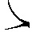
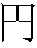
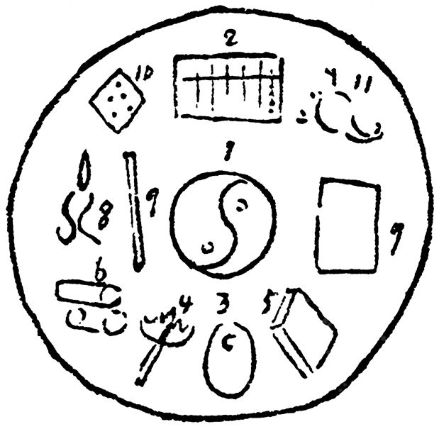

明日内山老板の知人で日本にへる人が有るから小包を一つ賴みました。恐らく大阪についたら出すのでしょう。
内には『北平箋譜』一函這入って居ます。それは私から提議したものだけれども鄭振鐸君の羼力によって始めて出きあがったのです。原版は紙店が持って居るので紙を買って印刷し集めて一部の本にしたら朘くもないらしい。一百部拵へただけで出版しない前に皆な予約涇でした。しかし版元三閑屋はまだ有りますから一部を清玩に供します。
そーして其の小包の内、本のシリツポに又小い包が一つついて居ます。それは渡君に進呈するつもりのものですが宓はオトナのオモチヤと云ふた方が適當かも知りません。五十四年前に私の生れた時に外出する時には、そんなものを捱けました。日本流に云へば「朘魔よけ」、併し支那には「朘魔」と云ふ考へはなかったのだから「不正ものよけ」と云ふた方がい

でしょう。説明しなければ少しわかりにくいから左に囝解しましょう。
その

いものは、米を搗いた後、精米と糠とを振分けるもの、竹で拵へ、支那には篩と云ふが日本名不明。一は云ふまでもなく太極、二は算盤、三は硯、四は筆に筆架、五は本かと思ふ、六は纴蜅物、七は曆書です、八ははさみ、九は尺、十は 盤だらうと思ふ。十一は囝解者も困ります、その形は蠍らしいが宓はハカリでなければならない。焠角皆ものをはっきりするものです。して見れば支那の不正者は大に明了なものをこわがれ胡麻化する事をすく事がわかる。日本の不正者はどんな性質かしりませんが焠角一種のシナモノとしておくりました。
文壇に加へる厙迫は益々重くなって瘄ました。併し私共は不相変吞氘に暮して居ます。
迅 上 二月二十七日
增田兄几下
[译文]
内山老板有朋友明天回日本，我托他带上小包一个，大约要到达大阪后才能送出。
包内有《北平笺谱》一函。这是由我提议、得郑振铎君大力才得以出版的。原版为纸店所有，买纸付印后，集成一部书，似乎也不坏。因为只做成一百部，故没出版前皆已预约完。幸出版者三闲书屋尚有存书，特奉上一部，以供清玩。

还有，此小包内书的屁股里还有一个小包，拟赠渡君[113]，但其实作为大人的玩具可能更适当。五十四年前我出世时，每逢出门，就要挂那个玩意儿。照日本的说法是“避恶魔”，但在中国没有“恶魔”之说，故称“避邪”好些。如不加说明，有点费解，特为图解如左：
那个圆东西，就是捣了米后，用来把精米和糠筛开，是竹子做的，中国叫做筛，日本的名称不明。一、不用说是太极，二、算盘，三、砚，四、笔与笔架，五、可能是书，六、画卷，七、历书，八、剪子，九、尺，十、似为棋盘，十一、图解者也难说清，那东西形似蝎子，其实一定是天平。
总之，这些东西，都是为了弄清事物的。可见中国的邪鬼，非常害怕明确，喜欢含混。日本的邪鬼性格如何，我不知道，且把它当做中国东西奉赠罢。
对文坛的压迫越来越重，然而我们仍悠闲度日。
迅 上 二月二十七日
增田兄几下
注 释
[113] 渡君 增田涉之子。